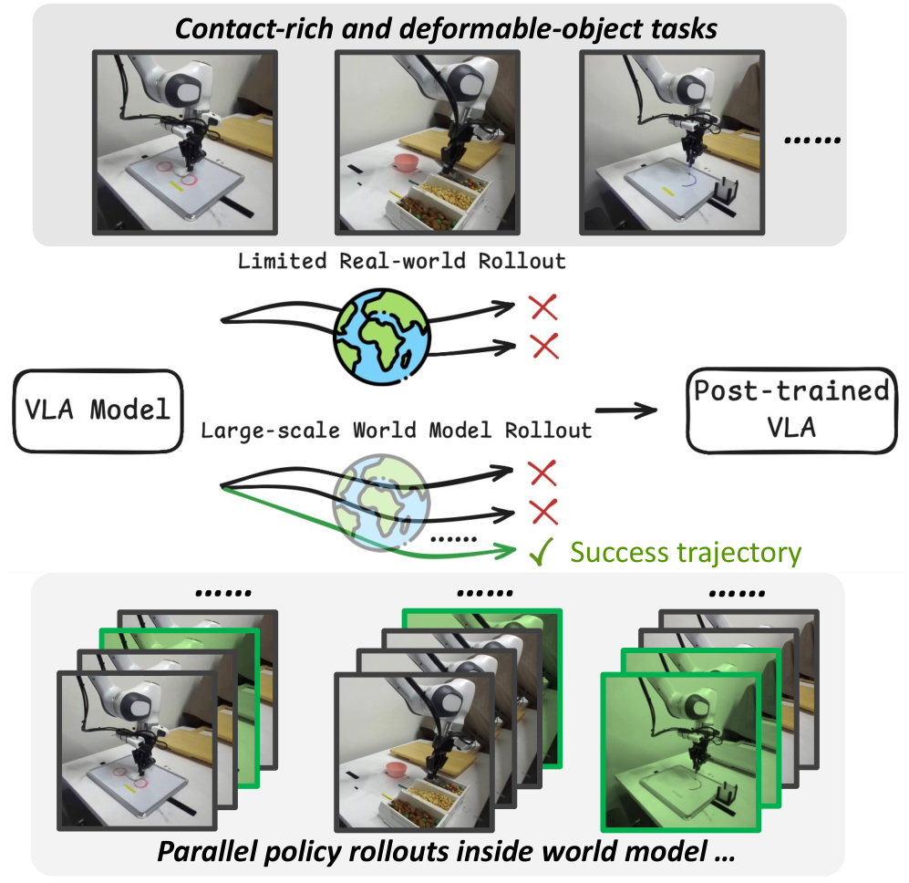

Why it matters왜 중요한가
The bottleneck of online VLA learning is not the algorithm — it's the cost of touching the real world.
온라인 VLA 학습의 병목은 알고리즘이 아니라, 실제 세계를 만지는 비용이다.
VLA models like π0.5 improve dramatically with online interaction, but collecting real-robot rollouts is slow, costly, and labor-intensive. Learned world models promise cheap synthetic data — yet they are trained mostly on successful demos, so they hallucinate optimistic outcomes and blur the contact-rich details that decide a task. VLAW's insight is to spend the scarce real-world budget not on policy data directly, but on grounding the world model with failures, then harvest unlimited synthetic experience from the corrected model. The result reframes scalable robot learning as a co-improvement loop rather than a one-shot sim-to-real transfer.
π0.5 같은 VLA 모델은 온라인 상호작용으로 크게 향상되지만, 실로봇 롤아웃 수집은 느리고 비싸며 노동집약적이다. 학습된 세계 모델은 값싼 합성 데이터를 약속하지만, 대부분 성공 시연으로 학습되어 결과를 낙관적으로 환각하고 과제를 가르는 접촉 디테일을 흐릿하게 뭉갠다. VLAW의 통찰은 희소한 실세계 예산을 정책 데이터에 직접 쓰지 않고 실패로 세계 모델을 정합시키는 데 쓰고, 교정된 모델에서 무제한의 합성 경험을 거두는 것이다. 그 결과 확장 가능한 로봇 학습을 일회성 sim-to-real 전이가 아니라 상호 개선 루프로 재정의한다.

By the numbers핵심 숫자
(0.46 → 0.868, 2 iters)절대 성공률 향상
(0.46 → 0.868, 2회 반복)
(vs. Filtered BC-2)합성 데이터 단독 기여
(Filtered BC-2 대비)
(↓ from 225.13 pretrained)정합 후 FVD
(사전학습 225.13 → 하락)
per task · per round실제 vs. 합성 롤아웃
과제·라운드당
(stack, book, erase, scoop, draw)접촉 많은 과제
(쌓기·책·지우기·뜨기·그리기)
for filtering successes성공 필터 임계값 p(yes)
비전-언어 보상
Results — iterating beats one-shot, world model beats no world model결과 — 반복이 일회성을, 세계 모델이 무-모델을 이긴다
| Method | Success | Δ vs base |
|---|---|---|
| Base π0.5 | 0.460 | — |
| DSRL | 0.560 | +0.100 |
| Filtered BC-1 | 0.640 | +0.180 |
| VLAW (Ours-1) | 0.744 | +0.284 |
| Filtered BC-2 | 0.752 | +0.292 |
| VLAW (Ours-2) | 0.868 | +0.408 |
In one diagram한 장의 그림
Idea: spend real data on fidelity, not on the policy아이디어: 실데이터를 정책이 아닌 '충실도'에 쓴다
Ground the world model with failures
Fine-tune the pretrained video world model (Ctrl-World) on a small set of online rollouts that include failure cases, co-trained with the original DROID data to avoid overfitting. This kills the "over-optimism" bias and sharpens contact-rich predictions — FVD drops from 225 to 64.
사전학습된 비디오 세계 모델(Ctrl-World)을 실패 사례를 포함한 소량의 온라인 롤아웃으로 미세조정하되, 과적합 방지를 위해 원본 DROID 데이터와 공동학습한다. 이로써 '과낙관' 편향이 사라지고 접촉 예측이 선명해진다 — FVD가 225 → 64로 하락.
Imagine, filter, repeat (AWR-style)
Run the policy in closed loop inside the model to make 500 synthetic rollouts/task; a fine-tuned VLM reward (Qwen3-VL-4B, p>0.8) keeps only successes. Post-train π0.5 with flow-matching on real+synthetic successes — an advantage-weighted update for likelihood-free policies.
정책을 모델 안에서 닫힌 루프로 돌려 과제당 합성 롤아웃 500개를 만들고, 미세조정한 VLM 보상(Qwen3-VL-4B, p>0.8)으로 성공만 남긴다. 실제+합성 성공으로 π0.5를 flow-matching 후학습 — 우도가 없는 정책을 위한 advantage-weighted 갱신.
How it works어떻게 작동하나
- Collect real rollouts실제 롤아웃 수집Deploy the current π0.5 on the real robot for a fixed budget (50/task), sparsely labeling each trajectory as success or failure — deliberately capturing the failures demos lack.현재 π0.5를 실로봇에 배치해 고정 예산(과제당 50)을 수집하고, 각 궤적을 성공/실패로 희소 라벨링 — 시연에 없는 실패를 의도적으로 포착한다.
- Post-train world + reward model세계·보상 모델 후학습Fine-tune the video world model on these rollouts (co-trained with DROID) and, in iteration 1, fine-tune the VLM reward model on the success labels.이 롤아웃으로 비디오 세계 모델을 미세조정(DROID와 공동학습)하고, 1회차에 성공 라벨로 VLM 보상 모델을 미세조정한다.
- Generate & filter synthetic data합성 데이터 생성·필터Roll the policy out inside the grounded world model (500/task), then keep only trajectories the reward model scores above threshold — large-scale, auto-annotated successes.정합된 세계 모델 안에서 정책을 롤아웃(과제당 500)하고, 보상 모델 점수가 임계값을 넘는 궤적만 남긴다 — 대규모 자동 라벨 성공 데이터.
- Post-train the policy, then iterate정책 후학습 후 반복Fine-tune π0.5 via flow-matching on real+synthetic successes, then loop back to step 1. Two rounds lift mean success 0.46 → 0.744 → 0.868.실제+합성 성공으로 π0.5를 flow-matching 미세조정한 뒤 1단계로 되돌아간다. 2회 반복으로 평균 성공률 0.46 → 0.744 → 0.868.
What to take away그래서, 가져갈 것
Failures are the asset. Feeding failed rollouts is what removes the world model's optimism — the synthetic data is only useful because the model can now predict things going wrong.
실패가 자산이다. 실패 롤아웃을 먹이는 것이 세계 모델의 낙관을 제거한다 — 모델이 '일이 잘못되는 것'을 예측할 수 있어야 합성 데이터가 쓸모를 갖는다.
Co-improvement compounds. Round 2 beats round 1 because the better policy gives the world model better data — the loop is the contribution, not any single component.
상호 개선은 복리로 쌓인다. 2회차가 1회차를 능가하는 건 더 나은 정책이 세계 모델에 더 좋은 데이터를 주기 때문 — 핵심은 단일 부품이 아니라 루프 자체다.
RL without likelihoods. Filtered flow-matching acts as advantage-weighted regression, giving expressive VLA policies a stable post-training path where standard RL stalls.
우도 없는 RL. 필터링된 flow-matching은 advantage-weighted regression처럼 작동해, 표준 RL이 막히는 표현력 높은 VLA 정책에 안정적 후학습 경로를 준다.
Cheap where it counts. 50 real rollouts buy 500 synthetic ones per task — real-world budget is spent on fidelity, then amplified 10× in imagination.
중요한 곳만 값싸게. 실제 50개가 과제당 합성 500개를 사들인다 — 실세계 예산은 충실도에 쓰고 상상 안에서 10배로 증폭한다.